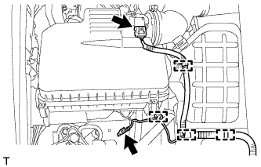
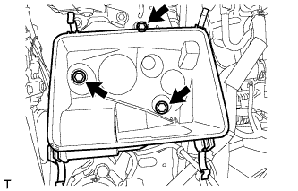
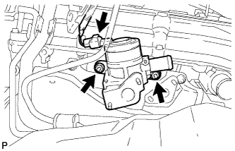

КЛАПАН ПЕРЕКЛЮЧЕНИЯ ПОДАЧИ ВОЗДУХА > СНЯТИЕ |
| 1. СНИМИТЕ ВОЗДУШНЫЙ ФИЛЬТР И ШЛАНГ |
|  |
Открепите 3 зажима и отсоедините разъем датчика массового расхода воздуха.
Выверните болт, отсоедините зажим и снимите провод соединения с массой.
 |
Отцепите 4 зажима.
Ослабьте зажим шланга и снимите крышку воздушного фильтра.
| 2. СНИМИТЕ КОРПУС ВОЗДУШНОГО ФИЛЬТРА |
|  |
Снимите фильтрующий элемент воздушного фильтра.
Выверните 3 болта и снимите корпус воздушного фильтра.
| 3. СНИМИТЕ УПЛОТНЕНИЕ № 1 МЕЖДУ ФАРТУКОМ ПРАВОГО ПЕРЕДНЕГО КРЫЛА И РАМОЙ |
 |
Освободите 5 фиксаторов и снимите уплотнение между фартуком переднего крыла и рамой.
| 4. ОТСОЕДИНИТЕ ШЛАНГ СИСТЕМЫ ПОДАЧИ ВОЗДУХА В НЕЙТРАЛИЗАТОР № 1 |
Отсоедините шланг системы подачи воздуха в нейтрализатор № 1.
| 5. СНИМИТЕ ТЕПЛОЗАЩИТНЫЙ ЭКРАН ВЫПУСКНОГО КОЛЛЕКТОРА № 1 |
 |
Выверните 5 болта и снимите теплозащитный экран выпускного коллектора № 1.
| 6. СНИМИТЕ ВПУСКНОЙ ПАТРУБОК № 4 |
 |
Отверните 4 гайки и снимите впускной трубопровод № 4 и 2 прокладки.
| 7. СНИМИТЕ КЛАПАН ПЕРЕКЛЮЧЕНИЯ ПОДАЧИ ВОЗДУХА В СБОРЕ |
|  |
Отсоедините разъем.
Отверните 2 гайки и снимите клапан переключения подачи воздуха.
Снимите теплозащитный экран выпускного коллектора № 1.